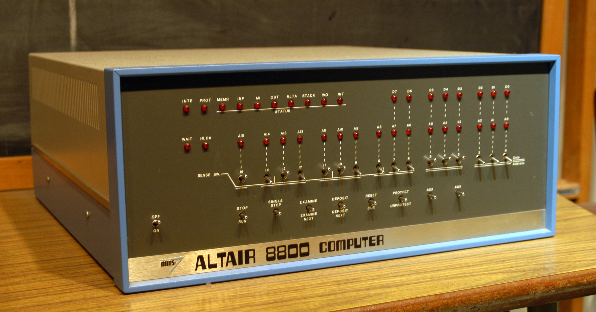

Paul Allen, cujo nome completo era Paul Gardner Allen, nasceu em 21 de janeiro de 1953, na cidade de Seattle, no estado de Washington, nos Estados Unidos. Ele ficou conhecido como um empresário, investidor e filantropo, sendo um dos co-fundadores da Microsoft, junto com Bill Gates.
Durante seus anos escolares em Seattle, Allen teve a oportunidade de conhecer Bill Gates. Compartilhando um interesse mútuo por computadores e programação, os dois começaram a colaborar. Em 1975, ao se deparar com um artigo na revista Popular Electronics sobre o Altair 8800, um dos primeiros computadores pessoais. Allen compartilhou a ideia com Gates de desenvolver um software para essa plataforma. Essa colaboração levou à criação da linguagem de programação BASIC para o Altair 8800.
Allen desempenhou um papel crucial nos estágios iniciais da Microsoft, sendo fundamental no desenvolvimento de produtos-chave e na negociação de um acordo com a IBM para fornecer um sistema operacional para seus computadores pessoais, o que resultou na criação do MS-DOS. No entanto, em 1983, Allen recebeu o diagnóstico de linfoma de Hodgkin, um tipo de câncer. Esse evento o levou a deixar suas responsabilidades diárias na Microsoft, focando em sua saúde. Após se recuperar, embora não tenha mais se envolvido diretamente na gestão da empresa, permaneceu como acionista e desempenhou um papel significativo como investidor e filantropo.